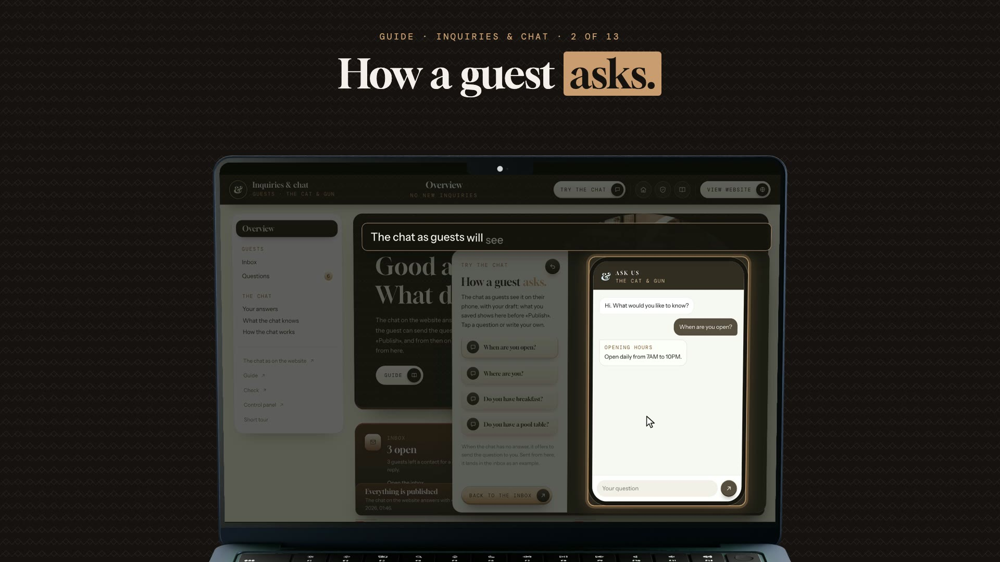
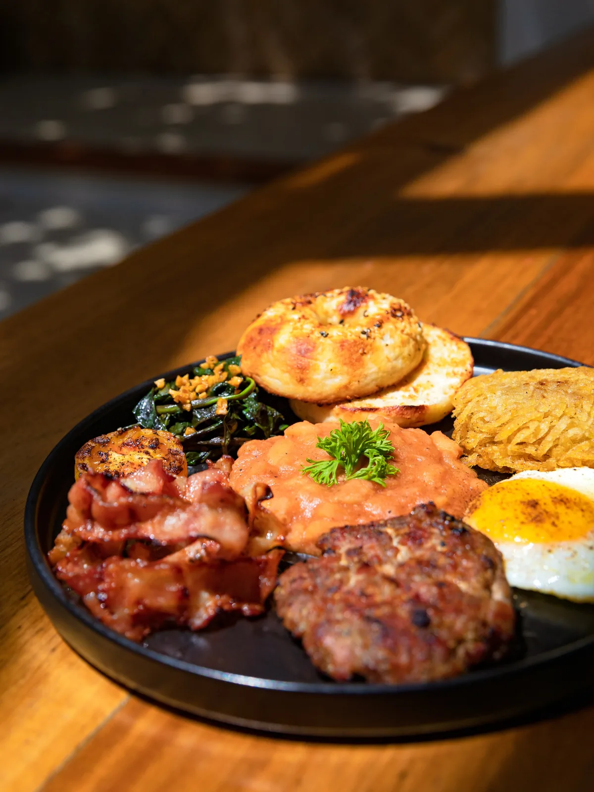

Academy · Room 03 · The menu · C
Menus & price lists
Drinks, coffee and juices, kitchen: one list makes the printed menu as a PDF and the menu page of the website.
Chapter 1 of 12 · Your menu online.
In this video
What the video shows
Every chapter with the sentence from the video. A click on the time plays the video from there.
- 01Your menu online.
- 02This is Menus & price lists.
- 03Three menus.
- 04The same place.
- 05Change a price.
- 06Saved in the draft.
- 07Move, copy, hide.
- 08The website too.
- 09Design the menu.
- 10Before and after.
- 11Publish.
- 12Earlier versions.
Up next
Next guide: Inquiries & chat
The guides follow the order of the rooms.

D1:18
Inquiries & chat
Guests will ask the chat on the website, you give the answers. Here you see what they asked and what the chat knows.
13 chaptersWatch the guide →

Room 03
Back to The menu
The room with this guide, the animation that shows how it works, the recommendation for use and the learnings.
The menuEnter the room →